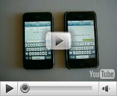

Welcome to GVMax
| Click Here To Start Using GVMax | |
Making the most of Google VoiceGVMax is a free webservice that monitors your Google Voice account and notifies you when you receive new SMS or Voicemail. GVMax can send you notifications in a number of ways including via Instant Messaging (XMPP/GoogleTalk), emails, Prowl and Howl notifications, Twitter, HttpPost and SMS (more on the way). The following videos show GVMax in action. GVMax on the IPhone |
Features
|
Extending your number's capabilities
GVMax is more than a simple sms and voicemail notifier, here are some other features it provides.- Initiate calls from IM client. You can place Google Voice calls right from your IM client. No need to log into Google Voice (especially handy on phones)
- Send SMS to Groups. GVMax can send SMS to a group of people. You write the SMS once and it is sent to all members of a Google Contacts Group.
- Turn your Google Voice number into a hub. You can setup your number to automatically broadcast any received SMS to a number of phones. Great for a family communication number.
- More to come. I am working on a number of ideas to further extend what you will be able to do with your Google Voice number. Stay tuned...